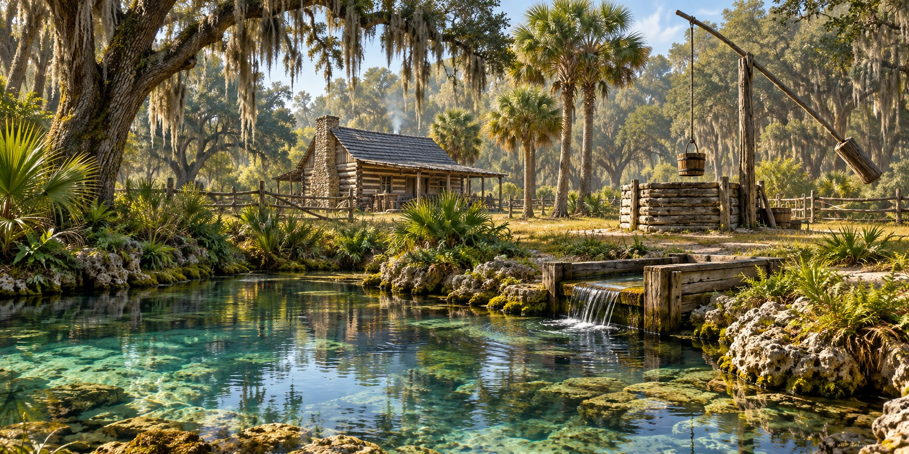

Wells and Springs
How Pioneer Families Found, Protected, and Depended on Florida’s Most Precious Resource

A usable water source shaped where a family could live. Florida’s wet seasons and extensive aquifers did not make clean water equally accessible at every site. Distance, dry-season reliability and the difficulty of drawing and carrying water all affected the work of a household.
Florida’s Springs: A Gift Without Equal
Florida has hundreds of springs, fed by groundwater moving through limestone. A first-magnitude spring discharges at least 100 cubic feet of water per second. Florida DEP reports that most Florida springs average roughly 70–75°F year-round, though individual springs differ. That temperature is cool compared with summer air; it is not a safe refrigerator temperature for perishable food.
As soon as a family found a spring on their land they built a spring box, a simple wooden frame around the opening that kept animals out and made a pool deep enough to dip a bucket.
Digging a Well
Where there was no usable surface spring, a household might rely on a well. Hand excavation was demanding and dangerous, especially in loose ground. The depth depended on the site and the water-bearing layer. Historic wells should be studied as evidence of past work, rather than as a construction plan.
Raising Water
Most wells used a bucket on a rope. A well sweep, a long pole balanced on a forked post with a counterweight at the short end, cut the labor of lifting. A windlass, a horizontal cylinder with a crank, handled deeper wells. Buckets were staved wooden vessels with a bail; a leaky bucket spilled water, and whatever it had picked up, back down the shaft.
Water and the Placement of Everything Else
The location of animal pens, privies and household work affected the risk of polluting a water source. Surface appearance could not show whether water carried harmful organisms. A downhill location alone does not establish a safe modern setback, because groundwater can move differently from visible runoff.
The Spring as the Heart of a Settlement
Springs could draw travelers and settlement activity because they provided a conspicuous source of water. Today Florida DEP identifies declining groundwater levels and excess nutrients as threats to spring flow and habitat. A resource that helped people establish homes still needs protection from the activities around it.
Quick Facts
| Spring size | First-magnitude: at least 100 cubic feet per second |
|---|---|
| Spring temperature | Most average about 70–75°F, according to Florida DEP; varies by spring |
| Spring box | Wooden frame keeping animals out of the source |
| Well depth | Depends on the site and water-bearing layer |
| Well lining | Logs, split cypress boards or dry-stacked limestone |
| Raising water | Bucket and rope on a sweep or windlass |
| Biggest hazard | Contamination from privies and stock pens |
Did You Know?
Settlers dug wells by hand, lining the shaft as they went.
Families put privies and pens downhill of the well.
Vocabulary
Spring box: a structure used to collect spring water; it does not by itself make the water safe.
Well sweep: a counterweighted pole used to lift a bucket.
Floridan Aquifer: the limestone aquifer system beneath most of Florida.
Discussion Questions
1. Why did settlers keep water sources away from privies and pens?
2. How did a spring shape a settlement?
Related Articles
FLH-0050 — Building a Homestead
FLH-0051 — Building with What the Land Provided
Sources
Scott, Thomas M., et al. Springs of Florida. Florida Geological Survey Bulletin No. 66. Tallahassee, 2004.
Florida Springs Institute. floridaspringsinstitute.org
Florida Department of Environmental Protection. Springs of Florida. floridadep.gov
Ste. Claire, Dana. Cracker: The Cracker Culture in Florida History. Museum of Arts and Sciences, Daytona Beach, 1998.
Florida Memory. State Library and Archives of Florida. floridamemory.com
Florida DEP — Springs fact sheet